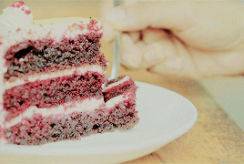
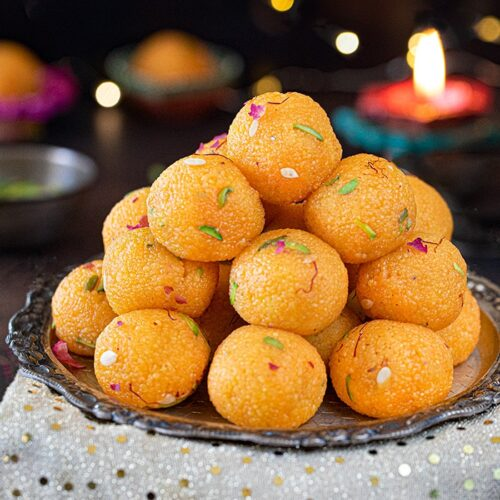
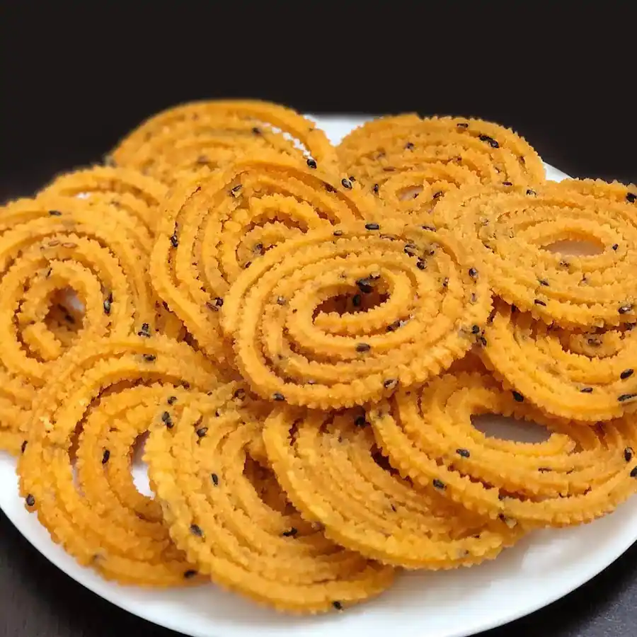
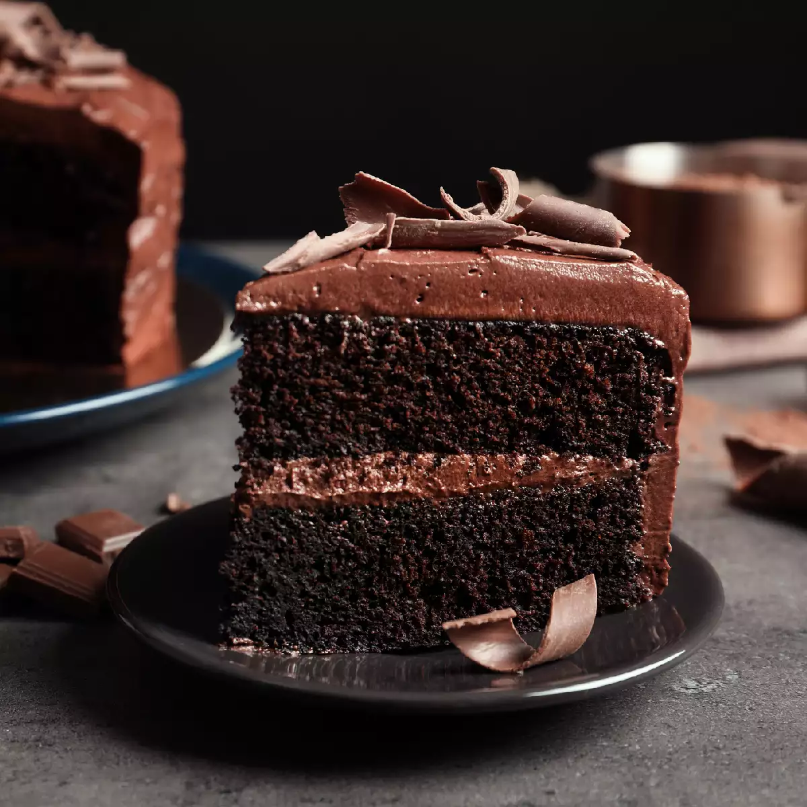
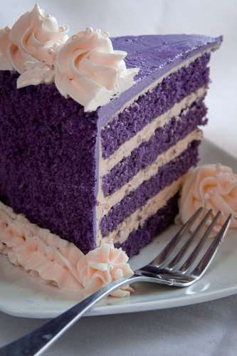

EXPLORE OUR SAVOURIES...

LADDU
Motichur laddu are soft, delish melt in the mouth ladoo made mainly with gram flour, sugar, and spices. The gram flour batter is fried to make tiny balls or boondi and mixed with sugar syrup, nuts or seeds and later shaped to neat round balls. Motichoor ladoo is a popular sweet from the North Indian cuisine and often made during festivals or celebrations. Here I share my detailed step-by-step photos to make these soft, tender and tasty homemade laddu recipe from scratch.
ORDER YOUR LADDU:
NO.OF KILOGRAMS:
GULAB JAMUN

Perhaps one of the most popular Indian sweet recipes across India. It is one such dessert that is not only liked by all age groups but can also be attempted by all age groups. Traditionally the Gulab jamoon is made with store-bought pre-mix, but the same can be made by combining milk powder, plain flour, and baking powder.
ORDER YOUR GULAB JAMUN:
NO.OF KILOGRAMS:
JALEBI

Of all the many delectable Indian sweets, Jalebi are considered superlative the world over. Crisp, crunchy funnel-cake style fried spirals are doused in a syrupy sweet sauce for a delightful treat that everyone in your family will love. This traditional recipe for homemade jalebi is tried and true, and will result in a pile of sweets that any mithai shop would be happy to sell!
ORDER YOUR JALEBI:
NO.OF KILOGRAMS:
MURUKKU
Not just the land of curries and spices, India is also synonymous with a plethora of fried snacks. One of it is the crispy, crunchy Murukku or Murukulu. Popular under this name in South India, this savory snack usually consists of rice and lentil flours along with spices and seasonings. Different South Indian households have different varieties. Mine here, is the basic Murukku Recipe with many troubleshooting tips and pointers, which’ll help you make this yummy snack from scratch, at home.
ORDER YOUR MURUKKU:
NO.OF KILOGRAMS:
CAKES
CHOCO TRUFFLE:
The heavenly taste of this Choco Truffle Cake will even leave the hardest-to-please chocolate addicts tranquil in every sense. Prepared with three layers of relishing chocolate cream filled in between the soft stacks of chocolate cake, and adorned with beautiful chocolate icing and rich glaze chocolate coating, this one is just irresistible.
ORDER YOUR TRUFFLE:
NO.OF KILOGRAMS:
BLACKCURRANT
This blackcurrant cake is a fantastic upside-down cake to try out. It’s full of enticing flavours including sweet pistachio nuts, tropical coconut and creamy vanilla. The juicy fruit is the crowning glory in this easy to make blackcurrant dessert.
ORDER YOUR BLACKCURRANT:
NO.OF KILOGRAMS:
RED VELVET

Red velvet cake is traditionally a red, crimson, or scarlet-colored layer cake, layered with ermine icing. Traditional recipes do not use food coloring, with the red color due to non-Dutched, anthocyanin-rich cocoa